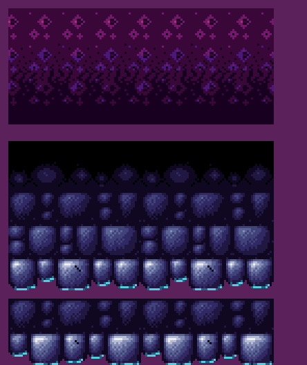
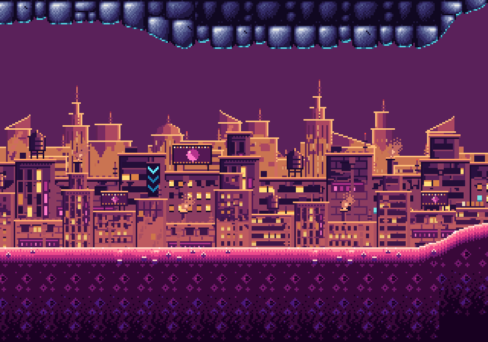
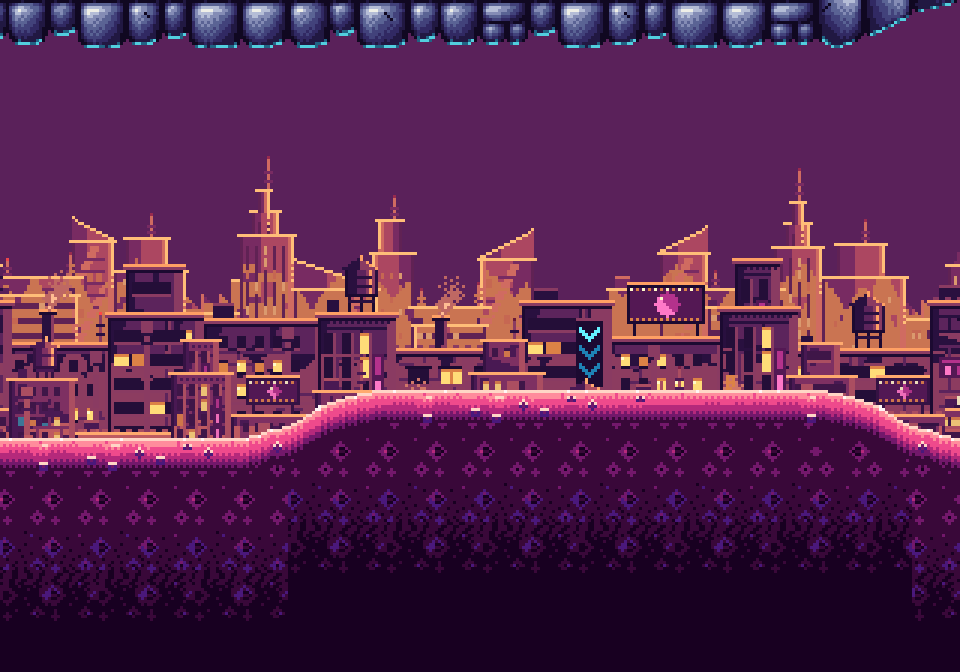
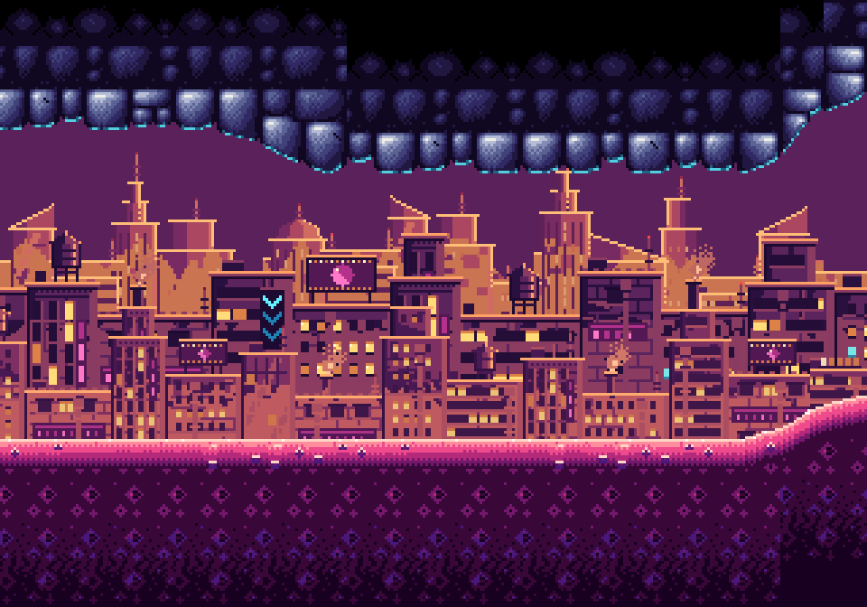
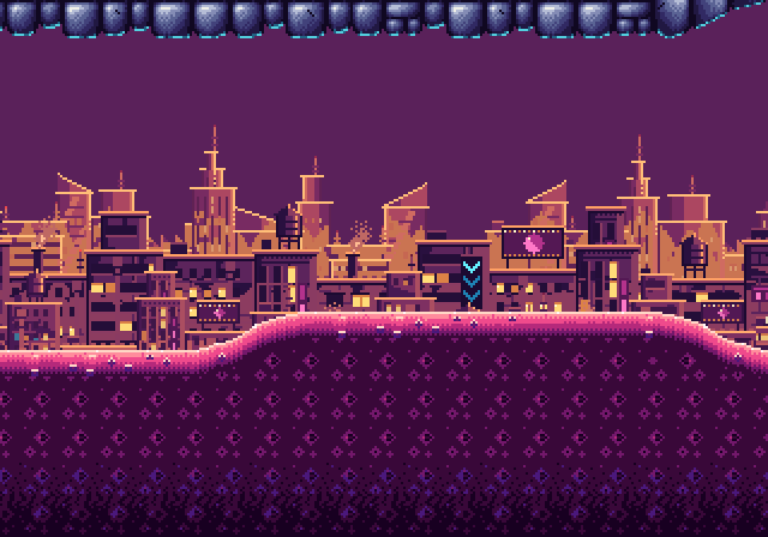

Floor: lip, 1 fill row, fade A, fade B, darkest gum. Roof: rim, fade A, fade B, black. Numbers in numbers.txt, pixels in cave_fade_art.py.
Top: floor (fill, A, B, solid). Middle: roof (black, B, A, fill, rim). Bottom: roof as placed, without the fill row.





Not the seed 6 sequence. With seed 6 the roof is at most 32 px deep, so roof fade B never reaches the screen. This shows both roof rows.

Same tiles. Fade A always at row 192, B at row 208, fill rows above. No step in the fade under slopes, but a taller gum wall.
